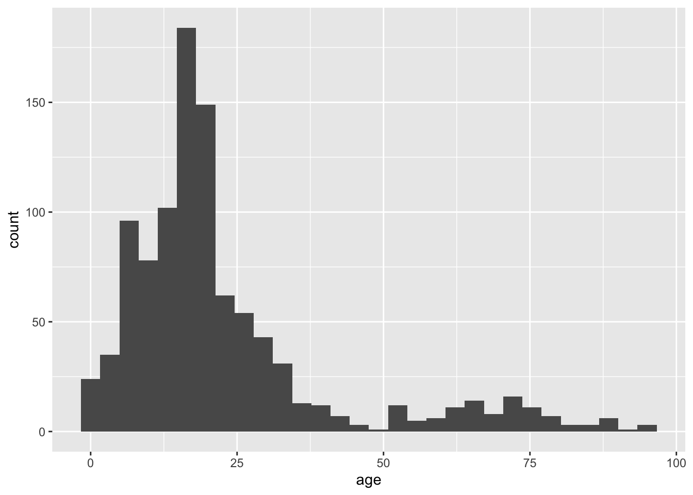
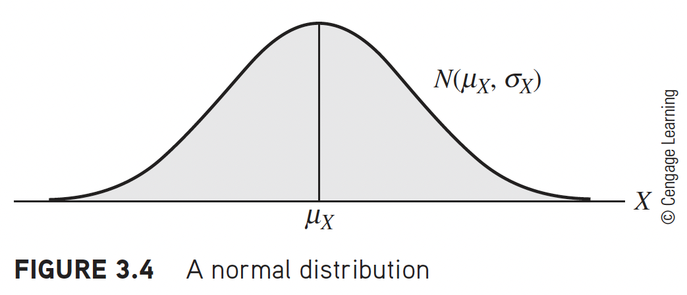
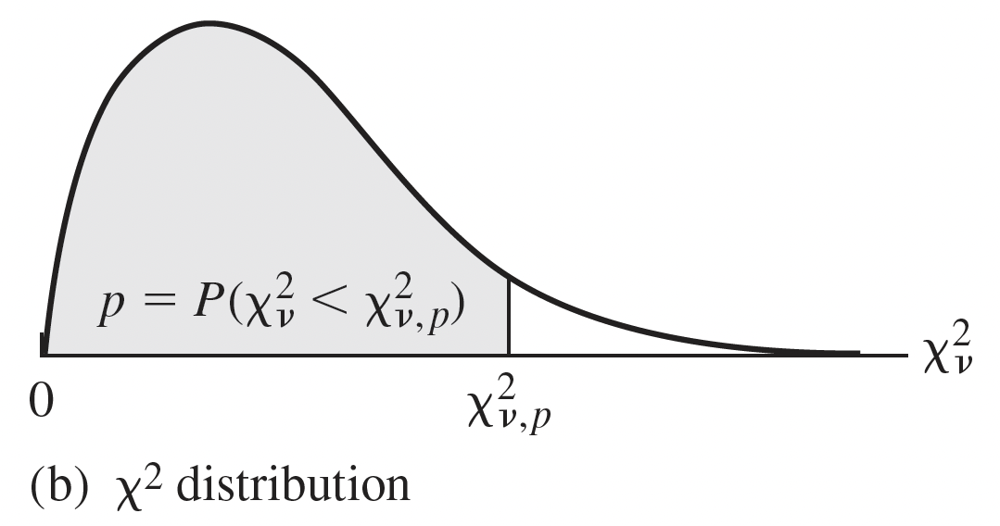
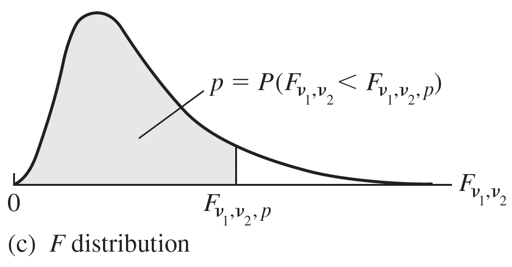
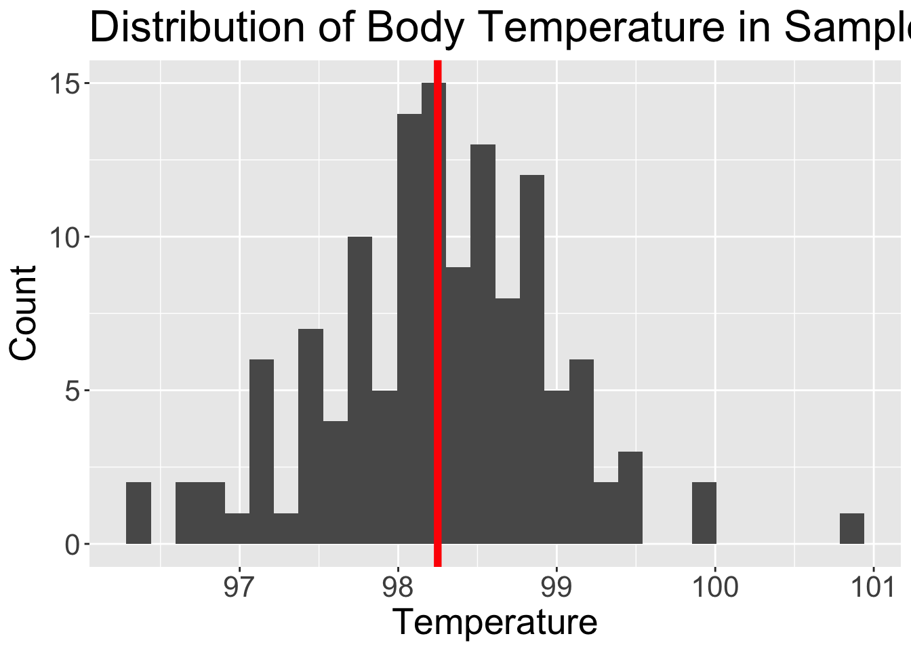
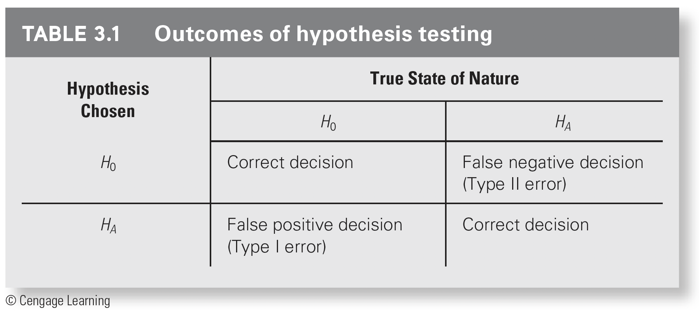
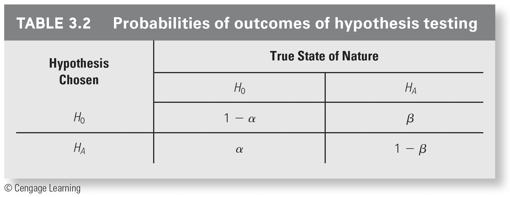

library(ggplot2)Review
Week 1
What did we learn in 511?
In 511, we talked about categorical and continuous outcomes (dependent variables)
We also talked about their relationship with 1-2 continuous or categorical exposure (independent variables or predictor)
We had many good ways to assess the relationship between an outcome and exposure:
| Continuous Outcome | Categorical Outcome | |
| Continuous Exposure | Correlation, simple linear regression | ?? |
| Categorical Exposure | t-tests, paired t-tests, 2 sample t-tests, ANOVA | proportion t-test, Chi-squared goodness of fit test, Fisher’s Exact test, Chi-squared test of independence, etc. |
What did we learn in 511?
You set up a really important foundation
- Including distributions, mathematical definitions, hypothesis testing, and more!
Tests and statistical approaches learned are incredibly helpful!
While you had to learn a lot of different tests and approaches for each combination of categorical/continuous exposure with categorical/continuous outcome
- Those tests cannot handle more complicated data
What happens when other variables influence the relationship between your exposure and outcome?
- Do we just ignore them?
What will we learn in this class?
We will be building towards models that can handle many variables!
- Regression is the building block for modeling multivariable relationships
In Linear Models we will build, interpret, and evaluate linear regression models
Process of regression data analysis

Main sections of the course
Review
Intro to SLR: estimation and testing
- Model fitting
Intro to MLR: estimation and testing
- Model fitting
Diving into our predictors: categorical variables, interactions between variable
- Model fitting
Key ingredients: model evaluation, diagnostics, selection, and building
- Model evaluation and Model selection
Main sections of the course
- Review
Intro to SLR: estimation and testing
- Model fitting
Intro to MLR: estimation and testing
- Model fitting
Diving into our predictors: categorical variables, interactions between variable
- Model fitting
Key ingredients: model evaluation, diagnostics, selection, and building
- Model evaluation and Model selection
Before we begin
- Meike has some really good online notes, code, and work on her BSTA 511 page
Learning Objectives
Identify important descriptive statistics and visualize data from a continuous variable
Identify important distributions that will be used in 512/612
Use our previous tools in 511 to estimate a parameter and construct a confidence interval
Use our previous tools in 511 to conduct a hypothesis test
Define error rates and power
Learning Objectives
- Identify important descriptive statistics and visualize data from a continuous variable
Identify important distributions that will be used in 512/612
Use our previous tools in 511 to estimate a parameter and construct a confidence interval
Use our previous tools in 511 to conduct a hypothesis test
Define error rates and power
Quick basics
Some Basic Statistics “Talk”
Random variable \(Y\)
- Sample \(Y_i, i=1,\dots, n\)
Summation:
\(\sum_{i=1}^n Y_i =Y_1 + Y_2 + \ldots + Y_n\)
Product:
\(\prod_{i=1}^n Y_i = Y_1 \times Y_2 \times \ldots \times Y_n\)
Descriptive Statistics: continuous variables
Measures of central tendency
Sample mean
\[ \bar{x} = \dfrac{x_1+x_2+...+x_n}{n}=\dfrac{\sum_{i=1}^nx_i}{n} \]
Median
Measures of variability (or dispersion)
Sample variance
- Average of the squared deviations from the sample mean
Sample standard deviation
\[ s = \sqrt{\dfrac{(x_1-\bar{x})^2+(x_2-\bar{x})^2+...+(x_n-\bar{x})^2}{n-1}}=\sqrt{\dfrac{\sum_{i=1}^n(x_i-\bar{x})^2}{n-1}} \]
IQR
- Range from 1st to 3rd quartile
Descriptive Statistics: continuous variables (R code)
Measures of central tendency
Sample mean
mean( sample )Median
median( sample )
Measures of variability (or dispersion)
Sample variance
var( sample )Sample standard deviation
sd( sample )IQR
IQR( sample )
Data visualization
Using the library
ggplot2to visualize dataWe will load the package:
library(ggplot2)Histogram using ggplot2
We can make a basic graph for a continuous variable:
data("dds.discr")ggplot(data = dds.discr,
aes(x = age)) +
geom_histogram()`stat_bin()` using `bins = 30`. Pick better value with `binwidth`.
ggplot() +
geom_histogram(data = dds.discr,
aes(x = age))`stat_bin()` using `bins = 30`. Pick better value with `binwidth`.
Some more information on histograms using ggplot2
Spruced up histogram using ggplot2
We can make a more formal, presentable graph:
ggplot(data = dds.discr,
aes(x = age)) +
geom_histogram() +
theme(text = element_text(size=20)) +
labs(x = "Age",
y = "Count",
title = "Distribution of Age in Sample")`stat_bin()` using `bins = 30`. Pick better value with `binwidth`.
I would like you to turn in homework, labs, and project reports with graphs like these.
Other basic plots from ggplot2
We can also make a density and boxplot for the continuous variable with ggplot2
ggplot(data = dds.discr,
aes(x = age)) +
geom_density()
ggplot(data = dds.discr,
aes(x = age)) +
geom_boxplot()
Learning Objectives
- Identify important descriptive statistics and visualize data from a continuous variable
- Identify important distributions that will be used in 512/612
Use our previous tools in 511 to estimate a parameter and construct a confidence interval
Use our previous tools in 511 to conduct a hypothesis test
Define error rates and power
Important Distributions
Distributions that will be used in this class
Normal distribution
Chi-square distribution
t distribution
F distribution
Normal Distribution
Notation: \(Y\sim N(\mu,\sigma^2)\)
Arguably, the most important distribution in statistics
If we know \(E(Y)=\mu\), \(Var(Y)=\sigma^2\) then
2/3 of \(Y\)’s distribution lies within 1 \(\sigma\) of \(\mu\)
95% \(\ldots\) \(\ldots\) is within \(\mu\pm 2\sigma\)
\(>99\)% \(\ldots\) \(\ldots\) lies within \(\mu\pm 3\sigma\)
Linear combinations of Normal’s are Normal
e.g., \((aY+b)\sim \mbox{N}(a\mu+b,\;a^2\sigma^2)\)Standard normal: \(Z=\frac{Y-\mu}{\sigma} \sim \mbox{N}(0,1)\)

Chi-squared distribution: models sampling variance
Notation: \(X \sim \chi^2_{df}\) OR \(X \sim \chi^2_{\nu}\)
Degrees of freedom (df): \(df=n-1\)
\(X\) takes on only positive values
If \(Z_i\sim \mbox{N}(0,1)\), then \(Z_i^2\sim \chi^2_1\)
- A standard normal distribution squared is the Chi squared distribution with df of 1.
- Used in hypothesis testing and CI’s for variance or standard deviation
- Sample variance (and SD) is random and thus can be modeled by a probability distribution: Chi-sqaured
- Chi-squared distribution used to model the ratio of the sample variance \(s^2\) to population variance \(\sigma^2\):
- \(\dfrac{(n-1)s^2}{\sigma^2}\sim \chi^2_{n-1}\)

Student’s t Distribution
Notation: \(T \sim t_{df}\) OR \(T \sim t_{n-1}\)
Degrees of freedom (df): \(df=n-1\)
\(T = \dfrac{\bar{x} - \mu_x}{\dfrac{s}{\sqrt{n}}}\sim t_{n-1}\)
In linear modeling, used for inference on individual regression parameters
- Think: our estimated coefficients (\(\hat{\beta}\))

F-Distribution
Model ratio of sample variances
- Ratio of variances is important for hypothesis testing of regression models
If \(X_1^2\sim \chi^2_{df1}\) and \(X_2^2\sim \chi^2_{df2}\), where \(X_1^2\perp X_2^2\), then:
\[\dfrac{X_1^2/df1}{X_2^2/df2} \sim F_{df1,df2}\] - only takes on positive values
Important relationship with \(t\) distribution: \(T^2 \sim F_{1,\nu}\)
The square of a t-distribution with \(df=\nu\)
is an F-distribution with numerator df (\(df_1 = 1\)) and denominator df (\(df_2 = \nu\))

F-Distribution
Model ratio of sample variances
- Ratio of variances is important for hypothesis testing of regression models
If \(X_1^2\sim \chi^2_{df1}\) and \(X_2^2\sim \chi^2_{df2}\), where \(X_1^2\perp X_2^2\), then:
\[\dfrac{X_1^2/df1}{X_2^2/df2} \sim F_{df1,df2}\] - only takes on positive values
Important relationship with \(t\) distribution: \(T^2 \sim F_{1,\nu}\)
The square of a t-distribution with \(df=\nu\)
is an F-distribution with numerator df (\(df_1 = 1\)) and denominator df (\(df_2 = \nu\))
Is there a relationship between our chi-squared and F-distribution?
Recall, \(\dfrac{(n-1)s^2}{\sigma^2}\sim \chi^2_{n-1}\).
The F-distribution for a ratio of variances between two models is: \(F = \dfrac{s_1^2\sigma^2_2}{s_2^2\sigma^2_1} \sim F_{n_1-1, n_2-1}\)
R code for probability distributions
Here is a site with the various probability distributions and their R code.
- It also includes practice with R code to see what each function outputs

Learning Objectives
Identify important descriptive statistics and visualize data from a continuous variable
Identify important distributions that will be used in 512/612
- Use our previous tools in 511 to estimate a parameter and construct a confidence interval
Use our previous tools in 511 to conduct a hypothesis test
Define error rates and power
Statistical inference: Estimation
Confidence interval for one mean
The confidence interval for population mean \(\mu\):
\[ \bar{x} \pm t^{*}\dfrac{s}{\sqrt{n}} \]
- where \(t^*\) is the critical value for the 95% (or other percent) corresponding to the t-distribution and dependent on \(df=n-1\)
We can use R to find the critical t-value, \(t^*\)
For example the critical value for the 95% CI with \(n=10\) subjects is…
qt(0.975, df=9)[1] 2.262157- Recall, that as the \(df\) increases, the t-distribution converges towards the Normal distribution
Confidence interval for one mean
The confidence interval for population mean \(\mu\):
\[ \bar{x} \pm t^{*}\dfrac{s}{\sqrt{n}} \]
- where \(t^*\) is the critical value for the 95% (or other percent) corresponding to the t-distribution and dependent on \(df=n-1\)
We can use R to find the critical t-value, \(t^*\)
For example the critical value for the 95% CI with \(n=10\) subjects is…
qt(0.975, df=9)[1] 2.262157- Recall, that as the \(df\) increases, the t-distribution converges towards the Normal distribution
We can also use t.test in R to calculate the confidence interval if we have a dataset.
t.test(dds.discr$age)
One Sample t-test
data: dds.discr$age
t = 39.053, df = 999, p-value < 2.2e-16
alternative hypothesis: true mean is not equal to 0
95 percent confidence interval:
21.65434 23.94566
sample estimates:
mean of x
22.8 Confidence interval for two independent means
The confidence interval for difference in independent population means, \(\mu_1\) and \(\mu_2\):
\[ \bar{x}_1 - \bar{x}_2 \pm t^{*}\sqrt{\dfrac{s_1^2}{n_1} + \dfrac{s_2^2}{n_2}} \]
- where \(t^*\) is the critical value for the 95% (or other percent) corresponding to the t-distribution and dependent on \(df=n_1 + n_2 -2\)
Here’s a decent source for other R code for tests in 511
Learning Objectives
Identify important descriptive statistics and visualize data from a continuous variable
Identify important distributions that will be used in 512/612
Use our previous tools in 511 to estimate a parameter and construct a confidence interval
- Use our previous tools in 511 to conduct a hypothesis test
- Define error rates and power
Statistical inference: Hypothesis testing
Steps in hypothesis testing

Example: one sample t-test
BodyTemps = read.csv("data/BodyTemperatures.csv")
ggplot(data = BodyTemps,
aes(x = Temperature)) +
geom_histogram() +
theme(text = element_text(size=20)) +
labs(x = "Temperature", y = "Count",
title = "Distribution of Body Temperature in Sample") +
geom_vline(aes(xintercept = mean(BodyTemps$Temperature, na.rm = T)),
color = "red", linewidth = 2)Warning: Use of `BodyTemps$Temperature` is discouraged.
ℹ Use `Temperature` instead.`stat_bin()` using `bins = 30`. Pick better value with `binwidth`.
Example: one sample t-test using p-value approach
We want to see what the mean population body temperature is.
State the null and alternative hypotheses:
\(H_0: \mu = 98.6\) \(H_0\): The population mean body temperature is 98.6 degrees F \(H_A: \mu \neq 98.6\) \(H_A\): The population mean body temperature is not 98.6 degrees F The significance level is \(\alpha = 0.05\)
The test statistic, \(t_{\bar{x}}\) follows a student’s t-distribution with \(df = n-1 = 129\)
The test statistic is: \(t_{\bar{x}} = \dfrac{\bar{x}-\mu_0}{\dfrac{s}{\sqrt{n}}}\) and with the data: \(t_{\bar{x}} = \dfrac{98.25-98.6}{\dfrac{0.73}{\sqrt{130}}} = -5.45\)
Calculate the p-value: \(p-value = P(t \leq -5.45) + P(t \geq 5.45)\)
2*pt(-5.4548, df = 130-1, lower.tail=T)[1] 2.410889e-07Conclusion: We reject the null hypothesis. There is sufficient evidence that the (population) mean body temperature after is different from 98.6 degree ( \(p-value < 0.001\)).
Example: one sample t-test using critical values approach
We want to see what the mean population body temperature is.
State the null and alternative hypotheses:
\(H_0: \mu = 98.6\) \(H_0\): The population mean body temperature is 98.6 degrees F \(H_A: \mu \neq 98.6\) \(H_A\): The population mean body temperature is not 98.6 degrees F The significance level is \(\alpha = 0.05\)
The test statistic, \(t_{\bar{x}}\) follows a student’s t-distribution with \(df = n-1 = 129\)
Decision rule (critical value): For \(\alpha=0.05\) , \(2*P(t \geq t^*) = 0.05\)
qt(0.05/2, df = 130-1, lower.tail=F)[1] 1.978524The test statistic is: \(t_{\bar{x}} = \dfrac{\bar{x}-\mu_0}{\dfrac{s}{\sqrt{n}}}\) and with the data: \(t_{\bar{x}} = \dfrac{98.25-98.6}{\dfrac{0.73}{\sqrt{130}}} = -5.45\)
Conclusion: We reject the null hypothesis. There is sufficient evidence that the (population) mean body temperature after is different from 98.6 degree ( 95% CI: \(98.12, 98.38\)).
How did we get the 95% CI?
- The
t.testfunction can help us answer this, and give us the needed information for both approaches.
BodyTemps = read.csv("data/BodyTemperatures.csv")
t.test(x = BodyTemps$Temperature,
# alternative = "two-sided",
mu = 98.6)
One Sample t-test
data: BodyTemps$Temperature
t = -5.4548, df = 129, p-value = 2.411e-07
alternative hypothesis: true mean is not equal to 98.6
95 percent confidence interval:
98.12200 98.37646
sample estimates:
mean of x
98.24923 Learning Objectives
Identify important descriptive statistics and visualize data from a continuous variable
Identify important distributions that will be used in 512/612
Use our previous tools in 511 to estimate a parameter and construct a confidence interval
Use our previous tools in 511 to conduct a hypothesis test
- Define error rates and power
Error Rates and Power
Outcomes of our hypothesis test

Prabilities of outcomes
Type 1 error is \(\alpha\)
- The probability that we falsly reject the null hypothesis (but the null is true!!)
Power is \(1-\beta\)
- The probability of correctly rejecting the null hypothesis

What I think is the most intuitive way to look at it